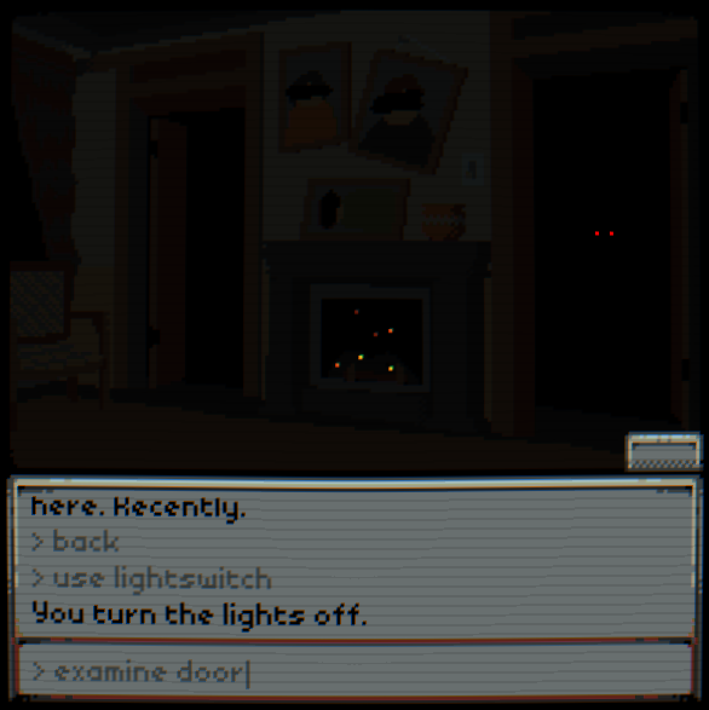

textbox adventure demo, also sometimes referred to as present past but hereafter referred to as tad, was the first godot project of mine in recent memory. tad originated from a UI concept for a friend's video game (hence the alternative title), which, much like tad itself, never ended up getting finished.

in tad, you navigate and interact with the world by entering commands into an input box. this was chosen for two reasons! first, it introduces a sense of distance between you (and, by extension, the protagonist) and the world around you, and second, text input can be easily interfered with (a trick that would've been used extensively). to talk about the wiring for a bit--the world is split up into "rooms", each made up of two bits of data: a dictionary (used to store stuff like the room's texture file and music to play) and a gdscript file (which would process pre-processed room commands (and don't even get me started on the command processing it's still one of the most difficult things i've ever coded (and its implementation at the time was, even then, extremely janky))). also, fun fact: tad's color palette is directly ripped from "loop hero". the music was also very inspired by that game as well.
the premise goes like this: the protagonist's parents die, leaving him his childhood suburban home. you arrive at the house, enter, and then quickly realize that all the openings on the house, instead of leading outside, lead into more house. wuh oh.
during the course of the game, you would meet a friendly(?) spirit named GHOST, who would guide you through various "memory" sequences toward your goal of escape. except, spoiler alert, GHOST is not actually all that friendly and is, instead, pulling you deeper and deeper into the depths of the house. in fact, as GHOST slowly begins assuming control over the course of the story, it begins assuming control over your inputs, as well. you would also be accompanied, over shitty telephone signal, by a friend whose purpose was to be a skeptical anchor to the world outside. basically, if you can't tell, it would've been a game about complicated grief and the relationship between individuality and agency.
sounds cool, right? that's kind of why i keep coming back to this project. the problem is that not a lot was planned out beyond what i've talked about here. i knew that GHOST would eventually ask for the protagonist's flipphone and, if the player gave it over, destroy it--there were two endings planned, and this would've been the big "which ending are you going to get?" decision. i also had vague ideas of the climax: GHOST would force the player to undertake some terrible... thing... by overwriting all player inputs with the commands it wanted.
also... tad ran into issues when it came to its controls. due to the way i had originally implemented "objects" in rooms, i had no way of signaling to the player what you could interact with in any given location. i was also worried that controlling the game via typing commands would quickly get annoying. also also, the task of making art for every single room ended up being pretty intimidating.
i started porting tad to godot 4 in may 2023 with some added ui features and a shorter story, but was quickly distracted by other things. i still want to come back to tad when i have time, but the opportunity has yet to present itself.